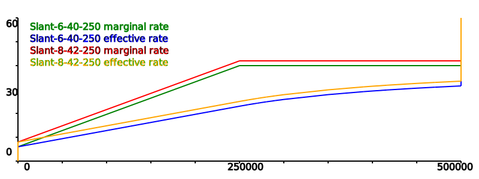

The typical tax rate plan in the US is based on three or more tax brackets where there is a flat rate for a range of incomes and then a sudden jump to the next step. In 2017 the married filing jointly plan had seven brackets ranging from 10% on the first $10,000 to 39.6% on any income beyond $470,700.

Note that there are actually two lines. The Marginal Rate is the tax rate paid on the most recent dollar, while the Effective Rate is the averaged out version. For the first $10,000 the rates are the same because it is basically a flat tax with the same rate on every dollar. There are two noticable points on the effective rate for this plan, at $10,000 where the rate jumps the first time from 10% to 15% and again at $18,650 when it jumps the second time to 25%. Eventually the lines become basically the same when income gets very large and the tax can be considered flat at 39.6% with a discount on the first $470,700.
An advantge of a Stepped Tax is that in the era before computers it was the easiest way to have multiple rates and keep the math simple. There is no need to calculate each portion of tax because the total tax due on the first $10,000 is the same for every taxpayer earning more than that amount, so when the tax forms are printed the total tax due at each rate change point is precalculated and included on the form. The only thing to calculate is the tax due at the highest rate and add it to the known amount.
This plan has seven rates and six points where the rates change. This means when the politicians want to make changes there are thirteen numbers to consider. Usually this means that at some points along the income curve there are winners who will be getting a lower rate, while at others there will be losers paying a new higher tax.
The usually proposed alternative plan is a flat tax with a single tax rate that applies to all income levels. This is not without its own problems. Set the rate too high, and those at lower income levels, who can least afford it, can find their taxes go up dramatically. But set it too low, and revenue from taxes falls too low to allow government to work.
Introducing a new plan, the Slanted tax. There are only three numbers for the politicians to worry about. The low tax rate charged if there is no taxable income, the rate on the zeroth dollar. The high tax rate when the slanting tax stops rising and becomes a flat tax for any more income beyond the inflection point. And finally the inflection point itself. The examples given in the next section with a top marginal rate from 38% to 44% with inflection points from $250,000 to $300,000 are chosen because the math is simple and should not be considered the suggested rates.
One attempt to make sure the rich paid their fair share was the Alternative Minimum Tax. Unfortunately it was not indexed to inflation so several decades later the threshold to trigger the AMT that was originally set to only catch the top earners now hits a much larger portion of the population and dips close to the middle class.
To prevent a repeat of the mistake of the AMT, the Slanted Tax will be indexed to inflation so each year the inflection point will rise automatically. The rate of rise should be calculated so roughly the same percentage of the population, probably the top 2% to 5% of earners, will be beyond the inflection point. So if a tax payer's income rises with inflation then the tax rate paid should remain the same because each earned dollar will be taxed less along the way to balance out. Those on a fixed income will find their tax burden drops as inlfation pushes the inflection point away and lowers the slope of the tax rate.
In a year with 10% inflation we will move the inflection point from $250,000 to $275,000. Normally inflation will not be this high, but it does make the differences easier to see.
When it is time to change the tax rate the simplest move is to raise the high end of the slope. In this case by 3%. Note that a tax payer with almost zero taxable income will only feel a slight change as the slope from low to high rate climbs gradually.
Another simple move is to raise the rate for everyone by the same amount. In this case by 2%. All taxpayers will pay an additional 2% on every taxable dollar.

If the high rate and inflection point rise at the same slope, then everyone on the slant keeps the same rate while the flat is just moved further up the slant.
If the high rate climbs faster than the inflection, then everyone gets a tax increase, but lower incomes pay a smaller change.
If the high rate climbs slower than the inflection, then lower income taxpayers get a tax cut while those at the high end will pay more.
The conversion to a Slanted Tax should to find a rate where low income earners get a small tax cut while the upper end is a political discussion to decide just what to do. Picking this plan will provide a small cut to those earning less than $300,000 and then the top few percent of earners get a small increase. This may not be the best choice, but it is a place to start the discussion.